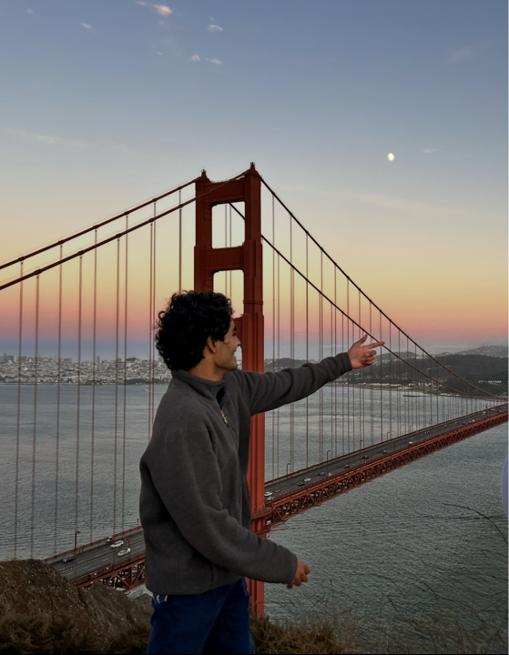

खम्मा घणी!
Welcome to my website. Chances are, if you're reading this, you're probably me. But if, for some reason, you're someone else who's stumbled over here, take your time, stay a bit, and enjoy yourself!
I'm Vallabh, and I'm a student studying Finance & Philosophy. I'm an entrepreneur in the textiles/apparel industry (check out my company). I love commercial aviation, finance, and problem-solving.
I'm a curious person trying to make the most of this strange, fascinating thing called life “All life is an experiment. The more experiments you make the better.”. I love to learn, try new things, and explore different ideas. I feel like I'm on a path of constant growth, and I want to use this little space on the internet to share my thoughts, ideas, projects, and the occasional observation that seems worth putting into words.
I love to shoot the breeze with friends and family, and spend time outside—whether it's running, skiing, or simply taking a nap on some soft grass.